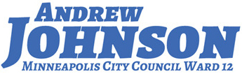

Toggle navigation
Andrew Johnson for City Council
Accomplishments
(current)
Blog
Calendar
Newsletter
Ward 12 Website
Contact
Donate
Hi Neighbors,
It has been an honor serving you over these past three years and I am happy to share that I will be running for re-election in 2017 to continue our great work together.
As I kick-off my campaign for re-election, I hope to earn your support as a delegate for the DFL convention on Saturday, May 6th, and your vote in the November election.
If you have any questions about my record or accomplishments, please do not hesitate to
contact me
. Finally, none of this work could happen without the countless amazing staff, organizations, and individuals who work every day to make Minneapolis a better city... THANK YOU!
~ Andrew
Accomplishments and Record
Quick Highlights
Providing excellent constituent service and being accessible, transparent, and responsive
Establishing a Small Business Office and cutting red tape by eliminating more than three-dozen ordinances
Securing paid sick leave for over 100,000 workers across our city and paid parental leave for nearly 4,000 City employees
Working on the proposed redevevelopment around the 38th Street Station Area and more than 300 units of affordable housing
Saving taxpayers $3 million a year by leading the effort to break-up the largest City contract and voting against more spending than any other council member
Leading efforts to increase the number of firefighters, reduce 911 wait times, and secure more investigative resources for the Police Department
Leading to unprecendented transparency by authoring the Open Data Policy, launching a portal, and getting Council videos permanently online
Helping pass a historic deal to solve the decades-long deficit in our park and road infrastructure
Consistantly helping to advance a number of environmental and racial justice policy changes
Helping mentor and elect the nation's first Somali American legislator, Ilhan Omar
Ward 12 Specific
Hosted over a hundred open office events and community meetings, attended nearly every neighborhood association meeting, and resolved over a thousand constituent issues
Currently working on more than 300 units of affordable housing (
4041 Hiawatha Ave
,
Snelling Yards
, and
54th Street & Riverview Road
)
Leading effort to improve the 38th Street Station Area with
excellent transit-oriented development
, public amenities, better lighting, more trees, and more commercial spaces
Provided support to businesses during Minnehaha Avenue reconstruction, from securing a billboard on Hiawatha Ave to helping with logistics such as parking access
Led effort to restore funding for
Nokomis Healthy Seniors
, which has helped thousands of residents stay in their homes as they age and stay physically/mentally/socially active
Split up multiple election precincts to improve Ward 12 voter experiences and reduce wait times
Worked with Representative Wagenius and Senator Torres Ray to pass
state law allowing Cap's Grille to expand their business
Currently working to have trash grids installed at Lake Hiawatha to
reduce litter entering the lake from the stormwater system
, along with other water quality improvements
Secured funding to repair several areas that had fallen into long-time disrepair:
46th & 46th
,
street near the Holiday station
, and the railroad tracks at 35th Street
Working to speed up rollout of fiber optic internet
across Ward 12
and all of Minneapolis by helping ISPs address barriers
(See a number of additional efforts related to Ward 12 under other categories)
Small Businesses
Led effort to
create a Small Business Office
to help small businesses navigate City processes (and identify opportunities to further improve)
Authored the repeal of over three-dozen antiquated ordinances and helped
lower a number of license fees
Authored budget amendment to create one-page checklists for opening a new business, improve customer service training, and explore business incubators and microloans
Authored budget amendment to create a business portal (see
example
) and make permits available online (launching in 2017)
Authored an ordinance allowing
temporary extended business hours
Endorsed
and campaigned for repeal of the outdated 70/30 laws
Worked with Representative Wagenius and Senator Torres Ray on SAC fee reform bill at State Capitol in 2016
Helped get SAC fees waived and reduced for a number of Ward 12 businesses
(See efforts to support businesses during Minnehaha Avenue reconstruction under "Ward 12")
(See efforts to pass state law enabling Cap's Grille to expand business under "Ward 12")
Public Safety
Secured additional resources
for North Minneapolis in 2014 from the Sheriff, which led to Joint Enforcement Teams and better investigations follow-up
Led effort to get the Fire Chief, Finance, and others on the
same page
to increase the number of firefighters
Worked with Mayor's Office to secure additional resources for MPD investigations in 2016 budget
Brought attention to delays in 911 call time answers and pushed for system improvements (
before
and
after
story)
Appointed to the
Metropolitan Emergency Services Board
, working to increase cross-jurisdiction collaboration for Emergency Management Systems
Advocated for and supported funding of rolling out body cameras to all police officers
Worked closely with MPD 3rd Precinct, neighborhood associations, and residents to address crime and promote home/block safety
(See co-authorship of budget amendment for police training under "racial equity")
(See appointment to DOJ subcommittee under "racial equity")
Environment
Authored
ordinance change
to enforce ban on environmentally-harmful containers, require commercial recycling, and to make it friendlier for businesses
Authored 2017 budget amendment to develop plan to eliminate fossil fuel vehicles from the City's fleet
Identified restrictions on urban agriculture as unconstitutional, resulting in lifting of restrictions
Completed study on deconstruction and currently working with staff and Council Member (CM) Palmisano on a construction and demolition waste diversion ordinance
Requested Public Works to bring forward proposal to fast-track LED streetlight rollout, ultimately included in the 2016 budget
Worked to
make Ward 12 PERC-free
(a carcinogenic dry cleaning chemical) and authored ordinance prohibiting new PERC use across Minneapolis
Worked with legislators to provide municipalities authority to restrict pesticides that are harmful to pollinators
Opposed expansion of HERC burner, which helped pave the way for a city-wide organics recycling program via a compromise with Hennepin County
Co-hosted a city-wide forum on Zero Waste
(See effort to reduce litter in Lake Hiawatha under "Ward 12")
(See co-authorship of Green Zones under "racial equity")
Racial Justice and Equity
Leading Restorative Justice expansion
, including working with the Mayor to triple funding via the 2016 budget, completing a study, and hosting a city-wide forum
Co-authored 2016 budget amendment to fast-track
implicit bias and procedural justice training
for police officers
Co-authored 2016 budget
staff directive
to create website for increased transparency and accountability of racial equity initiatives
Fought during 2015 budget process for equity office positions, One Minneapolis Fund, and Clean Energy funding
Co-hosted northside forum with CM Yang in the aftermath of Ferguson to examine community/police relationships
Appointed to Department of Justice subcommittee on improving Minneapolis community/police relationships (recommendations currently being developed)
Pushed on HR, Legal, and MPD (with CM Yang) for greater action on racial disparities in officer hiring, and later co-hosted a public forum
Co-authored ordinance to decriminalize posession of small amounts of marijuana
One of only three CMs to vote against the
East Phillips Water Yard
(watch
speech
)
Co-authored
Indigenous Peoples Day resolution
Co-authored
Green Zones Resolution
, forming a task force to bring forward recommendations addressing the disproportionate impact of pollution on communities of color
Authored Coldwater Springs resolution, resulting in the Dakota People returning to their sacred site and
freely/publicly performing ceremonies
for the first time since exile
Co-authored resolution against the Dakota Access Pipeline and
spoke out against use of Hennepin County resources
to infringe on protests in North Dakota
Co-authored
resolution
calling on Washington to change their NFL team name
Laid out a
strong case
for repealing the lurking and spitting ordinances
Called for an independent federal investigation
into the death of Jamar Clark
Transit
Led effort to improve light timings along Hiawatha Avenue (Highway 55)
Led policy change to increase ADA pedestrian infrastructure compliance
Successfully pushed for dedicated bicycle lanes and wider sidewalks for
38th Street reconstruction
(from Minnehaha Ave to Hiawatha Ave)
Advocating to route Minnehaha Creek trail under 28th Street bridge as part of the upcoming reconstruction
Advocating to
route Riverview Corridor over the Ford Parkway bridge
, better connecting Ward 12 with Highland Park and the Ford Plant redevelopment
Pushed for better sidewalk snow removal enforcement in the winter, led to a ten-fold increase
One of four CMs to
vote against Penn Ave
reconstruction plans due to absence of dedicated bicycle lanes despite them being in the City's master plan
One of six CMs to vote for better bicycle infrastructure on 3rd Avenue downtown
Helped fund bicycle safety awareness mailer to all residents via utility statements
Hosted community meeting in Standish-Ericsson on bicycle and pedestrian infrastructure improvements
(See securing funds for several long-deteriorating streets under "Ward 12")
(See safety improvements around our schools under "For Kids")
For Kids
Helped secure funding in the 2015 budget to maintain adequate mental health services at Roosevelt High School
Implemented multiple pedestrian safety improvements around our schools (and working on even more)
Currently working on a positive youth corridor project around Roosevelt High School, leveraging volunteers and businesses to work with youth
Worked with Homegrown MPLS to create a
website to help neighborhoods start school gardens
Advocated for increased funding for Northrop and Roosevelt in 2015 MPS budget
Organized with SENA a community welcome for students starting the school year at Roosevelt
Financial Stewardship
Led effort to break up City's largest contract
(IT services) and saved taxpayers more than three millions dollars annually
One of only two CMs to vote against
$24.5 million in additional funding to renovate the exterior of the Target Center
Scrutinized contract with Xcel Energy, resulted in $227,500 in savings for taxpayers
One of only two CMs to vote against $395,000 in funding to subsidize a downtown Christmas market
One of only two CMs to vote against the City spending money to roll out a new logo
One of only three CMs to
vote against $2 million in forgiveness
for a new downtown park
Labor and Workers
Started effort and was co-author of ordinance to ensure paid sick leave for more than 100,000 workers,
which passed unanimously and paved the way for other cities
Led the effort to bring 33 non-union jobs in-house by breaking up the Unisys contract
Led early effort
to get paid parental leave for nearly 4,000 City employees
Led effort to close a loophole that allowed contractors to skirt the City's apprenticeship requirements
One of only three CMs to vote against the reappointment of Director Korbel due to
Labor concerns
Government Transparency
Led effort to pass an
Open Data Policy
and launch
website
, making Minneapolis 16th in the nation to do so
Authored staff directives to post neighborhood association budgets, performance reports, and bylaws
online
Worked to get City Council meetings
posted on YouTube
so that they are now available indefinitely and more easily shared
LGBT Issues
Authored ordinance change
to allow gender-neutral single-stall restrooms and authored resolution encouraging businesses to go gender-neutral
Co-founding CM (along with CM Glidden) of the
Transgender Issues Workgroup
, addressing everything from police training and HR policies, to youth employment and public education
Airplane Noise
Knocked doors to encourage and help eligible residents take advantage of airport noise mitigation funds before they expired
Introduced a
new idea
to create market incentives for airlines to fly quieter model aircraft in and out of MSP
Lobbied for action on airport noise in Washington, D.C. to members of Congress and staff
Miscellaneous
Led effort on comprehensive rewrite of Animal Care and Control Ordinances to
improve outcome for animals across Minneapolis
and under facility care
Brought historic preservationists together to pilot a workgroup model for proactive preservation
Defended neighborhood association funding
by co-authoring 2015 budget amendment to return TIF revenue to the NCR department
Worked with legislators to legalize medical marijuana, including authoring a City Legislative Agenda amendment and testifying before state committee